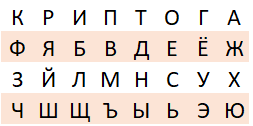
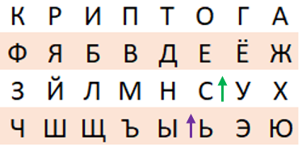
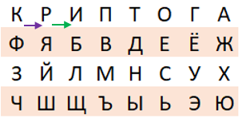
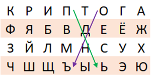

Пример расшифрования:
Расшифруем сообщение "ЬСРИДОСТС ЬПЬЛИДСОБ!" с ключевым словом “Криптография”. Сначала нужно заполнить матрицу:

Разобьем только буквы открытого текста на пары: "ЬС РИ ДО СТ СЬ ПЬ ЛИ ДС ОБ".
Разберем несколько случаев:
1. Пара “ЬС”.
Буквы находятся в одном столбце, поэтому заменяем их на буквы, находящиеся над ними, получаем замену “СЕ”.

2. Пара “РИ”.
Буквы находятся в одной строке, поэтому заменяем их на буквы, находящиеся слева, получается “КР”.

Пара “ПЬ”.
Буквы находятся в разных столбцах и строках, поэтому строим диагональ. Пара “ПЬ” образует диагональ, обозначенную зелёной стрелкой. А фиолетовой обозначены замены для этих букв - “ОЪ”.

Получившийся открытый текст: "СЕ КР ЕТ НО ЕС ОЪ БЩ ЕН ИЕ".
Так как сочетание “ОЪ” не имеет смысла, меняем на “ОО”. Расставляем пробелы и получаем открытый текст со всеми знаками “Секретное сообщение!”.